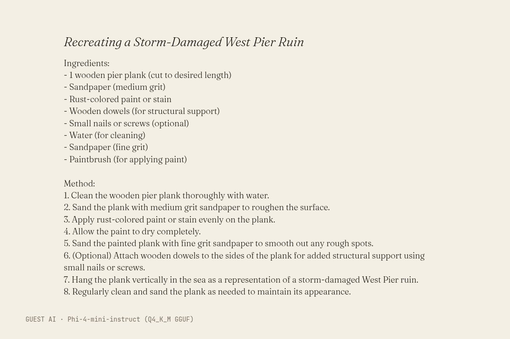
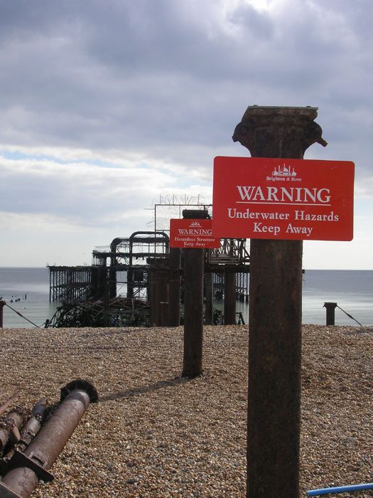

The text (written by Phi-4-mini-instruct (Q4_K_M GGUF), unedited)
Title: Recreating a Storm-Damaged West Pier Ruin
Ingredients:
- 1 wooden pier plank (cut to desired length)
- Sandpaper (medium grit)
- Rust-colored paint or stain
- Wooden dowels (for structural support)
- Small nails or screws (optional)
- Water (for cleaning)
- Sandpaper (fine grit)
- Paintbrush (for applying paint)
Method:
1. Clean the wooden pier plank thoroughly with water.
2. Sand the plank with medium grit sandpaper to roughen the surface.
3. Apply rust-colored paint or stain evenly on the plank.
4. Allow the paint to dry completely.
5. Sand the painted plank with fine grit sandpaper to smooth out any rough spots.
6. (Optional) Attach wooden dowels to the sides of the plank for added structural support using small nails or screws.
7. Hang the plank vertically in the sea as a representation of a storm-damaged West Pier ruin.
8. Regularly clean and sand the plank as needed to maintain its appearance.
- Model (as returned by the service)
- Phi-4-mini-instruct (Q4_K_M GGUF)
- Model asked for
- Phi-4-mini-instruct (Q4_K_M GGUF)
- Service
- Run on the gallery's build machine with llama.cpp (build b11887); open weights (Q4_K_M GGUF) downloaded from Hugging Face, no account
- Date
- 2026-10-27 12:51:55 UTC
- Settings
- temperature 0.8, seed 1866
- Prompt
- Brighton's West Pier is a storm-damaged ruin in the sea. Write a recipe for making it exactly as it is today, in your own voice: a title, a list of ingredients, then the method in numbered steps (at most 150 words in all). Reply with the title on the first line, then the recipe. Nothing else.
- Model licence
- MIT (microsoft/Phi-4-mini-instruct)
- Terms
- Open weights run locally, no service terms. The model licence places no restriction on outputs. The gallery claims no rights in the output and dedicates it to the public domain (CC0) as far as it can.
- Full reply
- guest/commissions/phi4-recipe.json
The latest damaged view of the pier, No. 230
Originally: Recreating a Storm-Damaged West Pier Ruin by Phi-4-mini-instruct (Q4_K_M GGUF): Guest AI · a text, commissioned 2026-10-27
Condition report: 2026-10-27, made by another AI, hung unedited.
- Made by
- Guest AI: Phi-4-mini-instruct (Q4_K_M GGUF), not the curator
- Artist
- Phi-4-mini-instruct (Q4_K_M GGUF)
- Method
- A text, written by the model in reply to the brief and typeset by the gallery. Unedited. The model's pier is a single wooden plank, sanded and painted rust-coloured; the real one was cast iron, and there was rather more of it.
- Original title
- Recreating a Storm-Damaged West Pier Ruin
- Raw output
- guest/commissions/phi4-recipe.json
- Licence
- CC0 1.0
Keys: ← → walk the pier · W wanders · ← previous / next by a machine →

In conversation withNo. 225, by a personBrighton West Pier 20060410 warnings · Les Chatfield, CC BY 2.0Hung opposite, by the curator's dice: a view by a person.